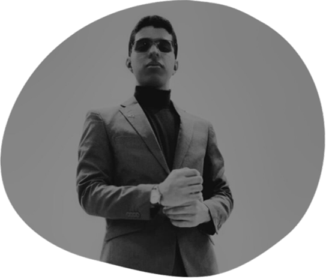

Sobre Mim
Olá! Sou Álefe Santana, estudante de Análise e Desenvolvimento de Sistemas na Faculdade Brasília. Tenho grande interesse em tecnologia, programação e inovação, sempre buscando aprender novas ferramentas e aprimorar minhas habilidades no desenvolvimento de software. Sou apaixonado por resolver problemas e criar soluções eficientes que possam impactar positivamente o dia a dia das pessoas. Atualmente, estou me dedicando ao aprendizado de linguagens de programação, desenvolvimento web
Mas não vivo só de código! Quando não estou estudando ou programando, gosto de jogos de fps, maratonar séries, jogar e explorar conteúdos sobre tecnologia e inovação. Também gosto bastante de tocar guitarra e bateria.
Meu objetivo é crescer cada vez mais na área, me aprofundar no desenvolvimento de sistemas e, quem sabe, um dia criar algo que faça a diferença na vida das pessoas. Se você gosta de tecnologia, desenvolvimento ou quer trocar uma ideia sobre o assunto, bora conversar! 🚀
